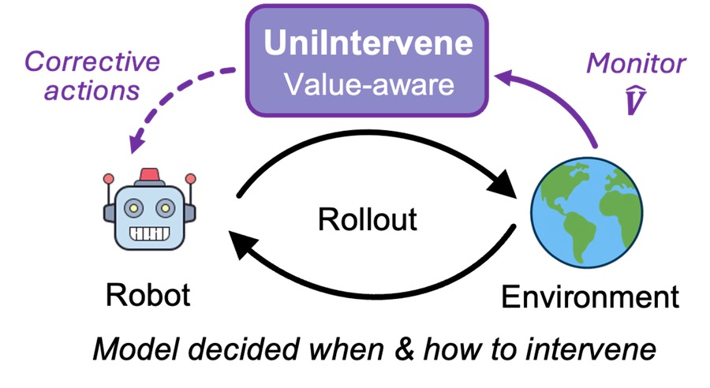
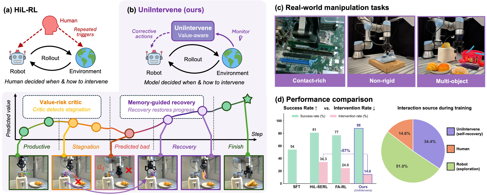
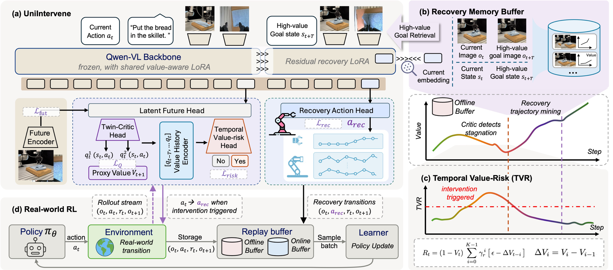
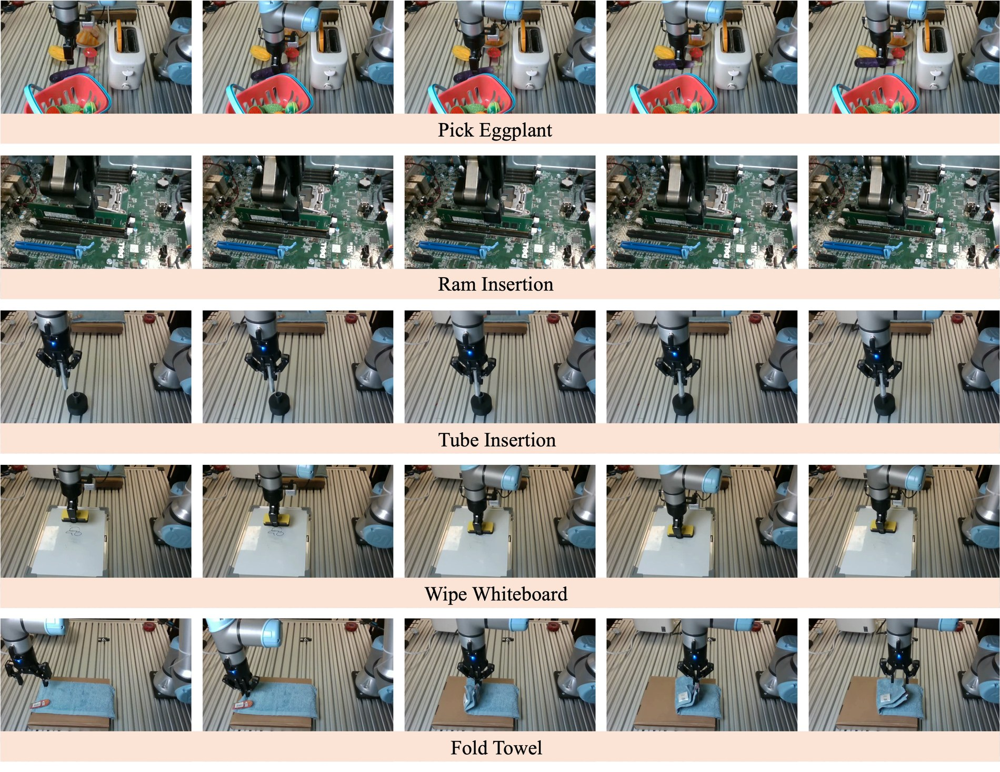
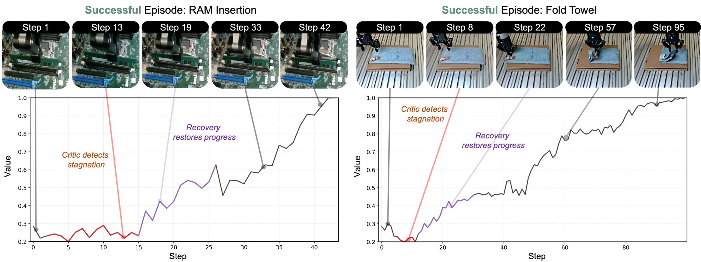
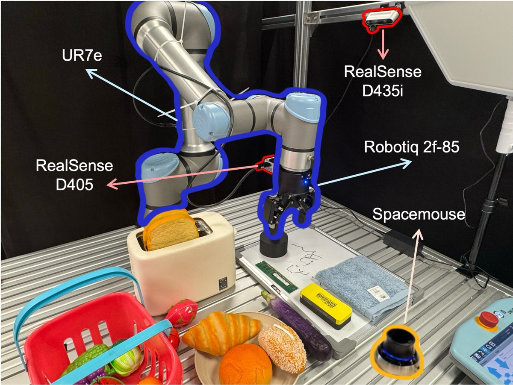

Agentic Intervention for Efficient Real-World Reinforcement Learning

An agentic intervention model that detects unproductive exploration and autonomously recovers the policy toward high-value states — turning human intervention into a value-aware recovery process for real-world robot RL.

Human-in-the-loop reinforcement learning (HiL-RL) has emerged as an effective paradigm for real-world robotic manipulation, enabling online policy improvement with human guidance. However, current HiL-RL frameworks remain intervention-intensive, relying on frequent human corrections to redirect the policy out of unproductive exploration, which incurs high labor cost and limits real-world scalability.
To address this, we propose UniIntervene, an agentic intervention model that detects unproductive exploration and autonomously recovers the policy toward high-value states, taking over the bulk of interventions from human operators. UniIntervene first performs future-conditioned action-value estimation, predicting the latent consequence of the current action and evaluating its induced value, which provides a more stable progress signal. Building on this, a temporal value-risk critic aggregates recent value dynamics and triggers intervention when the estimated value exhibits sustained stagnation or degradation. When intervention is required, UniIntervene retrieves a high-value recovery target from a memory of past intervention episodes and produces executable corrective actions through a goal-conditioned recovery policy.
In this way, UniIntervene turns intervention from passive human correction into a value-aware recovery process for efficient real-world RL. Extensive experiments on diverse real-world manipulation tasks demonstrate that UniIntervene improves the average success rate by 8.6% while reducing human interventions by 57% relative to state-of-the-art HiL-RL baselines.
A walkthrough of UniIntervene detecting value stagnation and autonomously recovering on real-world tasks.
UniIntervene internalizes the intervention decision: it continuously asks whether the ongoing rollout is making productive progress, and autonomously redirects the policy when it is not.

A model-based critic predicts the latent consequence of the current action and evaluates the value it induces — a far more stable progress signal under sparse rewards than scoring a single observation. Supervised by a frozen V-JEPA2 encoder and a progress-aligned proxy value function.
Rather than firing on any low value, a risk critic aggregates recent value dynamics over a sliding window. It triggers only on sustained stagnation or degradation, filtering out the transient dips that naturally occur during contact, alignment, and regrasping.
When triggered, UniIntervene retrieves a high-value recovery target from a memory of verified past recoveries, then a goal-conditioned policy decodes corrective actions toward it. Memory supplies where to recover; the policy learns how to get there — no human takeover required.
Five tasks on a UR7e arm spanning multi-object interaction, contact-rich assembly, and non-rigid manipulation — demanding pose robustness, precise contact, long-horizon correction, and recovery from low-value states.

Grasp the eggplant among distractors and lift it clear, leaving distractors undisturbed.
Align and seat a flexible tube into a fixed port with sub-centimeter precision.
Align a memory module to a slot and press it home — failures are visually subtle.
Wipe a marked region while maintaining contact force on a vertical surface.
Fold a flat towel along a target line through deformable, low-value regrasping states.
Qualitative rollouts of the full system: UniIntervene detects stagnation, takes over from the policy, and recovers toward task completion — autonomously.
Same task, same platform. UniIntervene (ours) recovers from low-value states and completes the task, while the HiL-SERL baseline stalls or requires repeated human correction.
UniIntervene attains the best success rate on every task and the lowest overall intervention rate — less than half of HiL-SERL.
| Method | Pick Eggplant | Contact-rich | Fold Towel | Average | ||
|---|---|---|---|---|---|---|
| SR / IR | Tube Ins. | RAM Ins. | Wipe | SR / IR | ||
| π0.5 (SFT) | 95 / – | 30 / – | 10 / – | 65 / – | 70 / – | 54 / – |
| HiL-SERL | 90 / 28.7 | 60 / 30.2 | 85 / 32.3 | 85 / 30.5 | 85 / 49.8 | 81 / 34.3 |
| HiL-SERL + FA-RL | 85 / 20.4 | 60 / 22.1 | 75 / 27.9 | 80 / 21.9 | 85 / 30.9 | 77 / 24.6 |
| HiL-SERL + UniIntervene | 95 / 10.0 | 70 / 15.8 | 95 / 12.1 | 90 / 10.9 | 90 / 24.1 | 88 / 14.6 |
SR: success rate (%, higher is better). IR: human intervention rate (%, lower is better). Best results in bold.
UniIntervene tops success rate across all five tasks, with the largest gains on contact-rich settings where prior triggers struggle.
Triggering on the temporal trend of estimated value detects stagnation more sensitively than failure prediction, especially when failures are visually subtle.
Intervention rate drops to 14.6% — less than half of HiL-SERL (34.3%) and well below FA-RL (24.6%).
Key components ablated on Pick Eggplant and RAM Insertion.
| Variant | Q-Loss ↓ | Int. F1 ↑ | SR (%) ↑ | IR (%) ↓ |
|---|---|---|---|---|
| w/o Future Prediction | 0.005 | 0.878 | 90 | 15.8 |
| w/o Value Prediction | – | 0.845 | 85 | 18.7 |
| w/o Temporal Value-Risk | 0.004 | 0.832 | 85 | 16.9 |
| w/o Memory Goal | 0.004 | 0.882 | 85 | 16.1 |
| UniIntervene (full) | 0.004 | 0.882 | 95 | 11.1 |
Across episodes, UniIntervene follows a consistent stagnation → trigger → recovery pattern: it waits for sustained stagnation, fires at the value minimum, then climbs smoothly to success.


@unpublished{uniintervene2026,
title = {UniIntervene: Agentic Intervention for Efficient
Real-World Reinforcement Learning},
author = {Anonymous Author(s)},
year = {2026},
note = {Under review}
}